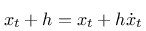
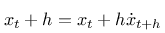
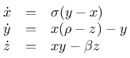
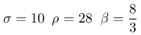
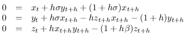
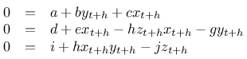

Nachdem ich erfolgreich einige chaotische Systeme mittels numerischer Verfahren untersucht hatte, reifte in mir der Entschluss, für diese Systeme implizite und explizite numerische Verfahren gegenüberzustellen.
Wie sich der Leser vielleicht noch erinnert, sind numerische Verfahren zur Lösung von Differentialgleichungen nichts anderes als Differenzenverfahren oder - anders gesagt - wird die Lösung stückweise approximiert: Man berechnet auf die eine oder andere Weise den Anstieg der Funktion in einem Punkt und nimmt an, dass die Funktion in einem hinreichend kleinen Intervall hinreichend linear verläuft. Dann berechnet man den Wert der Funktion am Ende des Intervalls aus dem Wert am Anfang des Intervalls über den Anstieg (keine Angst - unten gibts Bilder...):

Das ist die traditionelle Eulerformel für die numerische Lösung von Differentialgleichungssystemen. Wie bereits hier beschrieben hat dieses Verfahren (wie alle expliziten Verfahren) diverse Nachteile, die man mit der Benutzung des impliziten Verfahrens umgehen kann:
Mein erster Versuch, chaotische Systeme mittels impliziter Verfahren zu behandeln, beschäftigte sich natürlich mit dem altbekannten Lorenz-Attractor:

mit
Daraus folgt für die Behandlung mit dem impliziten Eulerverfahren und einer Schrittweite (oder Intervallänge) h: und eingesetzt:
und eingesetzt:

Und wegen der Übersichtlichkeit:
Löst man dieses Gleichungssystem - und ich gebe zu, dass ich mich außerstande sah und Hilfe bei SymPy gesucht habe - kommt man auf ein Ergebnis für die Berechnung der drei Zustandsgrößen, das auf der Konsole - direkt von SymPy - wie folgt aussieht:
from sympy import *
>>> x, y, z,a,b,c,d,e,f,g,h,i,j = symbols('x, y, z,a,b,c,d,e,f,g,h,i,j')
>>> linsolve ([a+b*y-c*x,d+e*x-h*x*z-g*y,i+h*x*y-j*z],(x,y,z))
{((a*g*j + a*h**2*x**2 + b*d*j - b*h*i*x)/(-b*e*j + b*h**2*x*y +
b*h*j*z + c*g*j + c*h**2*x**2), (a*e*j - a*h**2*x*y - a*h*j*z +
c*d*j - c*h*i*x)/(-b*e*j + b*h**2*x*y + b*h*j*z + c*g*j +
c*h**2*x**2), (h*(a*(e - h*z) + c*d)*(b*y + c*x) - (b*(e - h*z) -
c*g)*(a*h*y + c*i))/(c*(h**2*x*(b*y + c*x) - j*(b*(e - h*z) - c*g))))}
>>>
Eindrucksvoll und dennoch verwirrend - daher habe ich es hier nochmal aufbereitet:
 + cd)(by_t + cx_t) - (b(e - hz_t) - cg)(ahy_t + ci)}\over{c(h^2x_t(by_t + cx_t) - j(b(e - hz_t) - cg))}}\hfill\end{matrix}")
Die hier gezeigten Darstellung veranschaulichen den Vorteil des impliziten Eulerverfahrens noch einmal schön: Als Referenz habe ich den Lorenzattractor mit einem adaptiven, expliziten Cash-Karp-Solver bis zu t=30 berechnet. Das benötigte 10000 Schritte - damit war die optimale durchschnittliche Schrittweite mit h=0.003 ermittelt.
Daraufhin berechnete ich zunächst das System mit dem expliziten Eulerverfahren und unterschiedlichen Schrittweiten bis zu t=30. Die Darstellungen zeigen die Änderungen im Ergebnis für h= 0.003, h=0.006, h=0.02, h=0.03. Man kann erkennen, dass bereits bei h=0.02 die qualitativen Aussagen des Ergebnisses fast gar nicht mehr mit dem "Original" in Einklang zu bringen sind. Bei h=0.03 schließlich kann keine Lösung mehr ermittelt werden.
Das letzte Bild stellt das Ergebnis des impliziten Verfahrens mit einer Schrittweite h=0.03 dar - man sieht, dass die Lösung qualitativ noch sehr nahe am Original liegt. Damit ist einmal mehr bewiesen, dass man sich für die numerische Lösung von Differentialgleichungssystemen der Mühe unterziehen sollte, das implizite Eulerverfahren zumindest in Betracht zu ziehen.
Screenshots


Artikel, die hierher verlinken
Roessler Attractor und implizites Eulerverfahren
08.10.2018
Nachdem ich so viel Spaß bei der Untersuchung der Behandlung eines chaotischen Systems mittels impliziten Eulerverfahrens hatte, habe ich mir gleich noch eines vorgenommen...
Tags


Neueste Artikel
-
 Bouali-Systeme
Bouali-Systeme
Nachdem ich mich vor kurzem wieder einmal der Welt chaoticher Systeme zugewandt hatte, habe ich beim Studieren der Literatur mehrere mir bislang unbekannte Systeme entdeckt, von denen ich eines hier näher vorstellen möchte
Weiterlesen... -
Tomboy und Nextcloud in Docker
Ich bin ein begeisterter Nutzer von Nextcloud, benötige aber eine spezielle App (Addon, Plugin,...), das gar nicht so einfach zu installieren ist- das war der Grund, dass ich ein eigenes Docker-Image dasierend auf dem offiziellen bauen musste...
Weiterlesen... -
Fraktal zum Selberbauen
Es ist zwar schon zu spät für Weihnachten, aber da das Experiment Weihnachtsbaumkugeln benötigt ist es vllt. besser, es zu einer zeit durchzuführen, wenn die Kugeln nicht am Baum gebraucht werden...
Weiterlesen...
Manche nennen es Blog, manche Web-Seite - ich schreibe hier hin und wieder über meine Erlebnisse, Rückschläge und Erleuchtungen bei meinen Hobbies.
Wer daran teilhaben und eventuell sogar davon profitieren möchte, muß damit leben, daß ich hin und wieder kleine Ausflüge in Bereiche mache, die nichts mit IT, Administration oder Softwareentwicklung zu tun haben.
Ich wünsche allen Lesern viel Spaß und hin und wieder einen kleinen AHA!-Effekt...
PS: Meine öffentlichen GitHub-Repositories findet man hier.